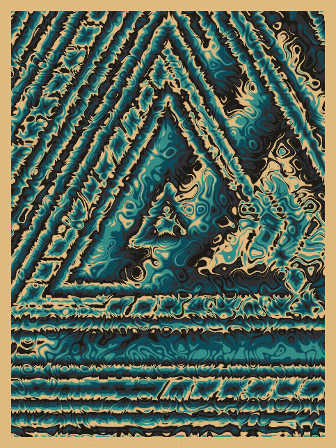
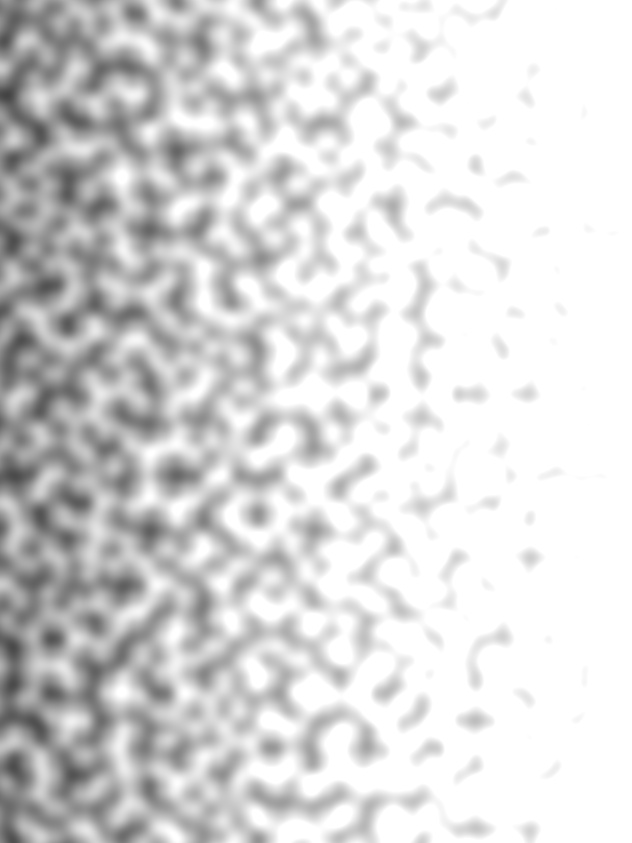

I am an artist and developer. I'm co-founder of Generative Toys, and am currently working on generative art, and tools and workflows to create it.
Divergent Convergence is a long-form project for fxhash, born from experiments with Perlin noise, domain distortion, and simple SDF shapes.
The essence of this series is combining shapes and noise in interesting ways - balancing opposites.
My workflow has been typically shader-based, but I recently purchased a pen plotter and needed a source of randomness to use for generating SVG with Javascript. I decided to implement Perlin noise from scratch, just for fun.
Of course, after I implemented it in Javascript, I had to port it to GLSL so I could also use it with shaders. I had so much fun using the noise in shaders that I have barely touched the plotter. (Sorry, friend!)
I was curious about how far you could push simple concepts like Perlin noise and signed distance fields/functions to create visually compelling compositions. I also wanted to play around with the idea of order and chaos, especially the boundaries between the two. Divergent Convergence was inspired by this experimentation.
The concept and process of this series is fairly simple - shapes and noise are combined and post-processed with a palette, frame and texture.
Perlin noise is used to distort a set of coordinates. The scale and intensity of this distortion is randomized.
Perlin noise is generated again, this time using the warped coordinates and a randomized scale.
Three shapes are generated. The type, scale, and position of each shape are randomized.
The shapes are combined using random methods. The combined shapes are then mixed with Perlin noise, and again the mixing method is randomized.
The combined shapes and noise are colorized using a random palette. A frame and subtle texture are added.
I loved creating Divergent Convergence! I spent about two months working on it, and about half of that time was spent fine-tuning the output. It was a labor of love - I wanted it to be as close to perfect as possible.
The real challenge of this series was to produce reliably good pieces of sufficient variety. Some interesting variations and palettes did not make it into the final version because I was unable to achieve quality results with them 100% of the time.
{kind=link}